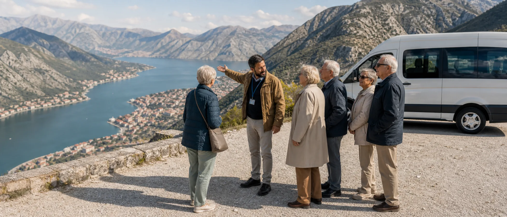
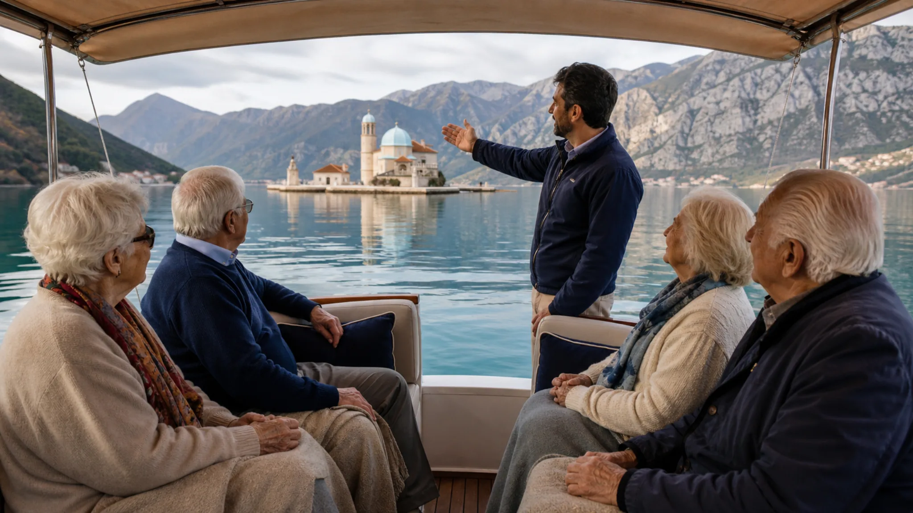

Ausflugsprogramm
Lizenzierte montenegrinische Guides leiten jeden Ausflug, unterstützt von einer Begleitkraft unseres Teams. Klimatisierte Kleinbusse, Gehstrecken von höchstens 300 Metern und geplante Pausen halten die Belastung überschaubar. Die Gruppe kehrt zur Mittagsruhe oder am frühen Abend zurück.

Unser Standard
Der Katalog
Das Programm umfasst Küste, Seen und Berge; die Routen wählen wir passend zur Saison. Vor jedem Aufenthalt erhält Ihre Einrichtung einen Plan mit Terminen, Gehstrecken und Rückkehrzeiten.
Halbtag · ganzjährig
Die fjordartige UNESCO-Bucht vom Wasser aus: Perast, die Wallfahrtsinsel Gospa od Škrpjela und die venezianische Altstadt von Kotor. Das überdachte Boot hat Sitzplätze für alle und legt direkt an der Uferpromenade an.
Halbtag · Frühjahr–Herbst
Stille Bootsfahrt über den größten See des Balkans, zwischen Seerosenfeldern und Klosterinseln. Danach Kostprobe von Wein und Honig auf einem Familiengut — alles ebenerdig, mit Schatten und Sitzplätzen.
Halbtag · ganzjährig
Die alte Königsstadt mit Kloster, Königspalast und Museen — das kulturelle Herz des Landes. Der Bus hält jeweils direkt am Eingang; die Museen sind kompakt und stufenarm zu begehen.
Halbtag · Mai–Okt.
Der Kleinbus folgt der Serpentinenstraße über der Bucht von Kotor und hält direkt an den Aussichtspunkten. Eine lange Wanderung ist nicht nötig; im Sommer ist es in den Bergen deutlich kühler als an der Küste.
Ganztag · Juni–Sept.
Der Schwarze See liegt in einem Nationalpark im Norden auf 1.400 Metern. Zum Programm gehören ein ebener Uferweg mit Bänken und ein Mittagessen im Berggasthof. Wegen der längeren Anfahrt planen wir mehrere Pausen ein.
Ganztag · ganzjährig
Das in den Fels gebaute Kloster ist eines der bedeutendsten Wallfahrtsziele des Balkans. Ein Shuttle bringt die Gruppe bis vor das obere Kloster. Für gläubige Bewohner Teil unseres Pilgerprogramms.
Halbtag · ganzjährig
Der Weinkeller befindet sich in einem ehemaligen unterirdischen Flugzeughangar. Die Verkostung findet im Sitzen bei konstanter Temperatur statt; anschließend folgt eine kurze Rundfahrt durch die Hauptstadt.
Ganztag · Übergangszeit
Der Süden des Landes: der über 2.000 Jahre alte Olivenbaum von Bar, Olivenöl-Verkostung und die langen Sandstrände bei Ulcinj — geplant für die milden Monate der Übergangszeit.
Für Angehörige
Unser Fotograf begleitet die wichtigsten Ausflüge. Am Ende des Aufenthalts erhält jeder Bewohner ein gedrucktes Album; Angehörige können zusätzlich einmal pro Woche eine Auswahl per E-Mail bekommen.

Nächster Schritt
Wir erstellen ein Angebot für den Pilotaufenthalt und wählen Ausflüge passend zur Saison und zur Mobilität Ihrer Bewohner aus.
Angebot anfordern